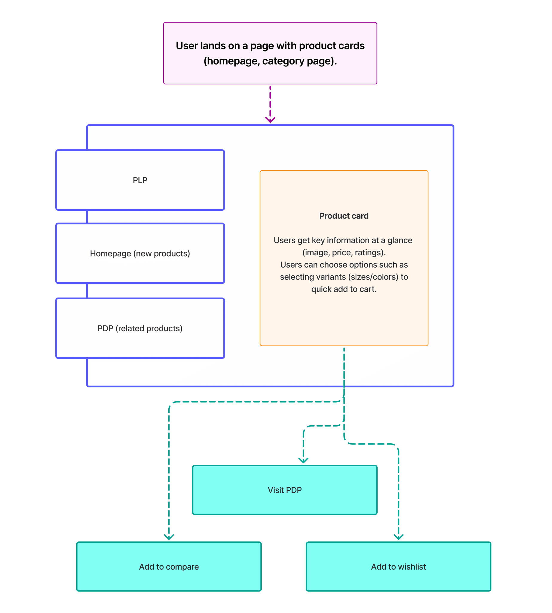
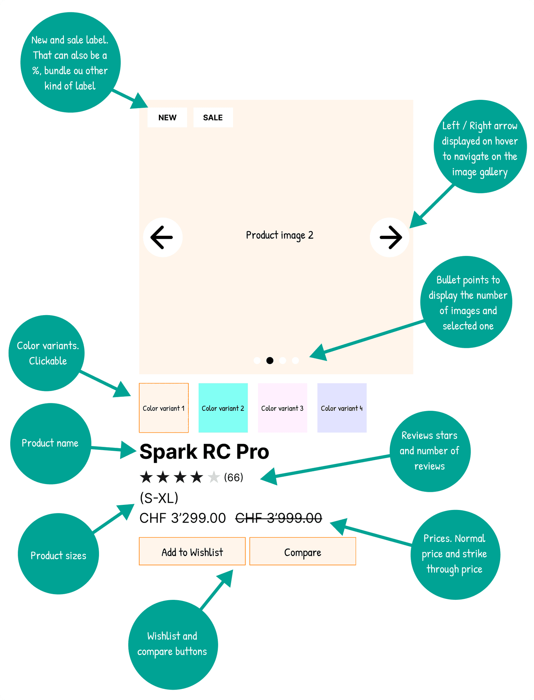
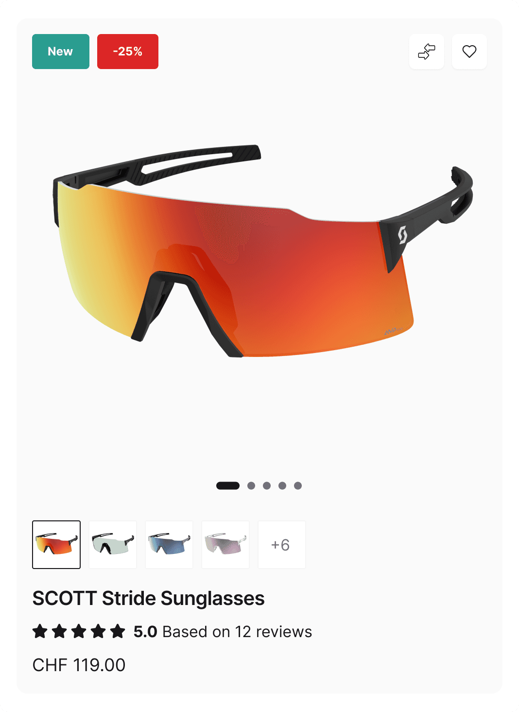
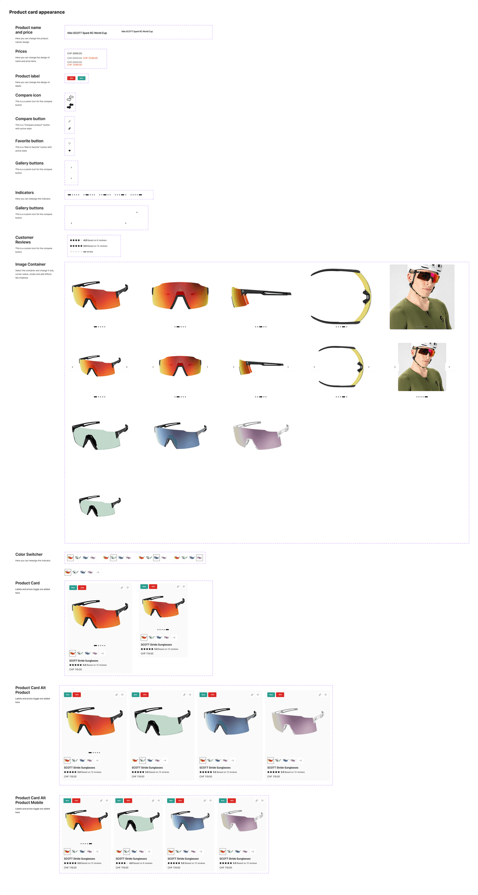

Problème à résoudre
Les cartes produits existantes valorisent peu le visuel, rendent la comparaison difficile et ne tirent pas pleinement parti des interactions possibles (variantes, listes de souhaits, recommandations, etc.). Dans un contexte de refonte globale, la Product Card devra :
- Renforcer l’impact visuel et émotionnel des produits.
- Faciliter la comparaison et la prise de décision.
- Mieux préparer la conversion tout en restant fidèle au design system Scott Sports.
Objectifs UX & business
- Clarifier les informations clés dès la carte (visuel, prix, variantes, signalétique promo).
- Réduire la charge cognitive sur les pages listant de nombreux produits.
- Soutenir les objectifs de conversion sans alourdir les performances.
Mon rôle
En tant qu’UX/UI Expert, j’ai cadré le problème, défini l’approche, conçu les solutions pour la réalisation de cette nouvelle product card.
Ce travail est une base d'exploration à la refonte globale du site, en définissant un modèle de carte produit réutilisable et aligné sur la vision e-commerce de Scott Sports.
Approche
- Analyse de l’existant et benchmark rapide des standards e-commerce (performance, architecture de la carte, interactions clés).
- Définition des scénarios prioritaires (découverte produit, comparaison, ajout au panier ou à la liste de souhaits).
- Conception de user flows et de wireframes pour valider la place et le rôle de la Product Card dans le tunnel d’achat.
- Tests rapides et feedbacks internes/terrain pour affiner les choix.

User flows
Des parcours utilisateurs ont été cartographiés pour visualiser comment la carte produit intervient à chaque étape : découverte depuis la home ou les catégories, cross-selling depuis les fiches produits, comparaison de plusieurs modèles, ajout à la wishlist ou au panier.
Wireframes
Des maquettes basse fidélité ont permis de tester différentes organisations de la carte (ordre des infos, mise en avant des variantes, placement des call-to-action). Cette phase a servi à anticiper les points de friction, simplifier la lecture et garantir la cohérence avec l’ensemble du site Scott Sports.

UI design & décisions clés
- Mettre le produit au centre
L’image occupe une place plus importante pour créer un impact immédiat et renforcer la dimension émotionnelle, essentielle dans un univers où l’esthétique du matériel influence fortement l’achat. - Faciliter la comparaison
Les variantes (coloris, options) et des badges dynamiques (New, –25%, etc.) rendent la comparaison plus rapide et réduisent la charge cognitive sur les pages listant plusieurs produits. - Enrichir les interactions, sans les complexifier
Une mini-galerie au survol permet de parcourir plusieurs vues du produit. Les actions secondaires (wishlist, comparaison) sont accessibles via des icônes discrètes. La Quickview a été écartée au profit d’une navigation plus fluide entre les fiches produits, rendue possible par des technologies comme React ou NextJS. - Ancrer la carte dans le design system
Typographies, marges, arrondis et états interactifs ont été redéfinis à partir du design system Scott, afin de gagner en modernité tout en assurant consistance et maintenabilité sur l’ensemble du catalogue. - Impacts attendus
Ce redesign vise à mieux valoriser les produits, fluidifier la navigation et augmenter l’engagement sur les listes de produits (clics vers les fiches, ajouts à la wishlist / comparaison, intention d’achat), tout en préparant la future refonte complète du e-commerce B2C.

Impact du nouveau design de la Product Card
La nouvelle Product Card a été repensée pour offrir une expérience plus immersive, moderne et orientée conversion, tout en restant fidèle à l’identité visuelle et technique de Scott Sports.
Outils & design system
Le projet s’appuie sur une utilisation avancée de Figma :
- Composants et variantes pour gérer les différents états (promo, rupture, nouveau produit, etc.).
- Auto-layout pour garantir la réactivité et l’adaptabilité de la carte selon les contextes (desktop, grille dense, carrousel…).
- Design tokens alignés sur le design system Scott (couleurs, typographies, espacements) pour faciliter la maintenance et l’industrialisation.
